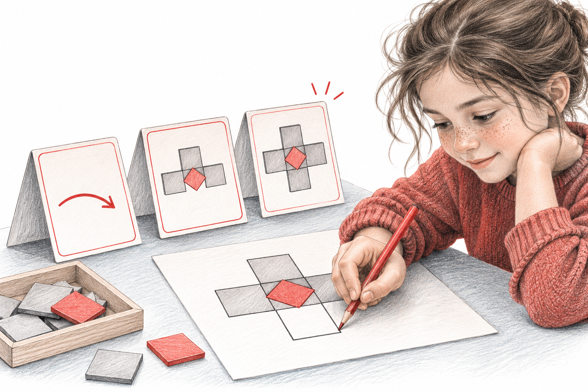

Hausaufgabenhilfe soll eine konkrete Hürde verkleinern.

Erklären lassen
«Erkläre einem Kind der [Klasse], wie man [Thema/Rechenschritt] macht. Nutze ein einfaches Beispiel, das NICHT die Aufgabe ist. Verrate die Lösung der Aufgabe nicht.»Einen Tipp holen, wenn es klemmt
«Mein Kind hängt bei dieser Aufgabe: [Aufgabe]. Bisher hat es [was es schon gemacht hat]. Gib genau einen kleinen Tipp für den nächsten Schritt. Kein Ergebnis, keine vollständige Rechnung.»Das Ergebnis prüfen lassen, ohne zu korrigieren
«Mein Kind hat diese Lösung: [Lösung mit Weg]. Sag nur, ob der Weg stimmt. Wenn nicht: Zeig, in welchem Schritt sich etwas lohnt, nochmals anzuschauen, aber korrigiere nicht selbst.»Antwort kurz selbst prüfen: Stimmt sie? Passt sie zum Unterricht?
Der nächste Schritt gehört dem Kind.
Keine Namen oder persönlichen Daten eingeben, und die Regeln der Schule zu KI beachten.
Die Hilfe hört dort auf, wo das Denken anfängt. 📚
Hausaufgabenhilfe soll eine konkrete Hürde verkleinern. Dafür muss zuerst klar sein, ob eine Erklärung, ein Hinweis oder eine Rückmeldung gebraucht wird. Eine vollständige Lösung kann kurzfristig entlasten, zeigt aber nicht, was das Kind verstanden hat.
Bitte das Kind, seinen bisherigen Versuch zu zeigen. Wenn noch nichts steht, lasse es erklären, was die Aufgabe verlangt und welcher Begriff unklar ist.
Wähle eine kleine Hilfe und prüfe sie selbst. Bei einer Beispielrechnung sollen die Zahlen anders sein, damit die eigentliche Aufgabe offen bleibt.
Lass das Kind danach weiterarbeiten und den Schritt erklären. Wenn die Schwierigkeit bleibt, notiert ihr die konkrete Frage für die Lehrperson.
Ausgearbeitetes Beispiel, kein Bericht aus einer konkreten Klasse.
Ausgangslage: Das Kind soll 3/4 von 20 bestimmen, weiss aber nicht, was der Nenner bedeutet. Eine KI-Lösung mit 20 × 0,75 hilft am Begriff vorbei.
Darauf kommt es an: Zuerst muss verständlich werden, dass das Ganze in vier gleiche Teile geteilt wird. Eine neue Rechenabkürzung löst diese Verständnisfrage nicht.
Eine begründete Lösung: Mit zwölf Plättchen werden vier gleiche Gruppen gelegt; drei davon enthalten neun Plättchen. Anschliessend versucht das Kind die eigentliche Aufgabe selbst: drei von vier gleich grossen Teilen von 20 ergeben 15.
Die Aufgabe verlangt: […]
Das Kind kann bereits: […]
Unklar ist: […]
Erkläre nur diesen Begriff an einem anderen Beispiel. Keine Lösung der Zielaufgabe.
Danach erklärt das Kind selbst […]Erwachsene übernehmen: Stelle die Hilfe bereit, aber lasse den nächsten Schritt beim Kind. Eine schöne Lösung ist nicht das einzige Ziel.
Unsicherheit mit weiteren Chats füllen: Wenn verschiedene Antworten verwirren, stoppt und haltet die Frage für den Unterricht fest.
Beim nächsten ähnlichen Auftrag zuerst fragen, welche Hilfe damals nützlich war. So wird aus fremder Hilfe eine eigene Lernstrategie.
Woran du die Qualität erkennst: Das Kind kann die Hilfe in eigenen Worten wiedergeben und einen passenden Schritt selbst versuchen, auch wenn noch nicht alles gelingt.
Hausaufgabenhilfe kann an einer konkret benannten Hürde ansetzen und den nächsten eigenen Schritt ermöglichen. Die erwachsene Begleitung prüft, ob der Hinweis fachlich stimmt und zur im Unterricht verwendeten Darstellung passt. Eine kurze anschliessende Erklärung zeigt, was das Kind aus der Hilfe gemacht hat. Bei anhaltender Unsicherheit wird eine präzise Frage für die Lehrperson festgehalten.
Fiktive Aufgabe. Ein Kind soll 84 durch 4 teilen. Es kennt 80 durch 4, stockt aber beim Rest. Ein Bot liefert sofort das vollständige Ergebnis mit einer langen zusätzlichen Erklärung.
Nutze Gegenstände oder eine Zeichnung mit vier gleichen Gruppen. Lass das Kind den Schritt mündlich erläutern.
Bitte das Kind, eine eigene gut zerlegbare Divisionsaufgabe zu erfinden und den gewählten Ansatz zu erklären.
Kläre die bekannte Darstellung und nutze eine dazu passende Erklärung. Eine offene Frage kann für die Lehrperson notiert werden.
Wenn die vereinbarte kleine Aufgabe bearbeitet wurde oder weiteres Probieren keine Orientierung mehr schafft. Halte dann die konkrete Hürde für die nächste Unterstützung fest.